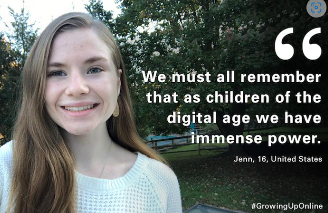

The page or area describing the choices available to us through or by your chosen technology/topic.
The aspect of Technology addiction and Workaholism come with many negative
reflections, that point towards how both of these aspects are damaging the environment
and the people captured by it. Thanks to companies that have identified the issues with
tech addiction and workaholism, it has allowed us to look after our health and safety if
we make the correct choices. One of the big companies to take a step towards this is
Apple, they have given their customers choice to have the option to set screen time on
their devices, which controls the amount of time and shares data on the usage of the
device by the customer, as per an Article written in the Forbes, by Alice G. Walton, she
speaks on how Investors are pressuring Apple over the psychological risks of screen
time for kids. The article reflects on the mental health of the kids who spend “an
average of 4.4 hours a day”, for a young child this is a concern, for their well being, but
how has Apple responded over the years? This article was written in 2018 and since
than Apple have made multiple attempts over the years to address this issue by adding
a ‘Screen Time’ feature, this feature allows the device to gather the data of the user on
how much they spend time on apps, or on screen and upon that display a report, this
feature also allows parents to set up screen time for their kids. Apple still seek to make
this feature more compatible in regards to the health and safety of their users, multiple
articles reflect on the impact this app has made, according to an article on the Verge
written June 7 2022 by Jennifer Pattison Tuohy, Jennifer reflects on how this feature is
useful, and that the features within it are easily controllable and easy to understand
compared to other companies that also provide this feature.
Another article that speaks about the the digital age has impacted us can be seen as positive in
many ways, written by Sophie Aziakou in Dec 2017, Sophie studies into the research that
UNICEF has committed towards the cause of technology, though it may not specifically be
directed towards the aspect of technology addiction and workaholism, it still shows the choices
we are presented with as people living in the digital age, the content that Sophie writes on is
also aimed at much younger audience and it helps as the young audience are the one growing
in the digital age and learning vast majority of new skills and creating inventions and
innovations. What stands out most is that within the article Sophie uses quotes and experiences
from young teenagers and adults, and Sophie looks into children that come from different
backgrounds and how technology has presented them. As per 19 year old Garry:
This image is from Forbes article, written by Sophie Aziakou, quoting Gary.
Another teenager, 16 year old Jenn from the United States says:

This image is from Forbes article, written by Sophie Aziakou, quoting Jenn.
Both statements reflect on the use of technology, and it is easy to accept their opinion as
reality as both what Jenn and Gary say is true, the fact that technology has given us the choice
to be powerful with it gives us the choice to use it for the greater good or not. Though the
choices presented from this is very arguable, as given the choice it depends on the user or the
person on how they utilize, also the fact that many see technology addiction as a major negative
factor, it still doesn't disregard the fact that we are very advanced in the modern world because
of technology, and that is why we have to learn and understand our responsibility when it
deciding on the safer and smarter choices when it comes around to the utilization of technology.
thanks to W3C for tutorial and adapted code from Style Examples
also thanks to WDN for HTML and CSS resources and any adapted code snippets from Mozilla Developer Network